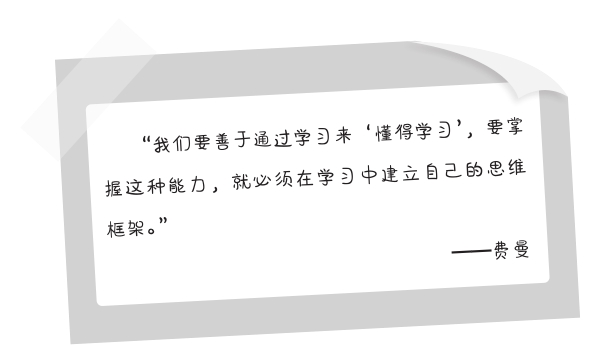

第九章
阅读与记忆的原则
我在读书时有个保持多年的习惯，每当要阅读一本书或了解自己不熟悉的资料，便准备一个简易的笔记本和一支笔。它可以是几张纸，也可以是一个薄薄的小册子。笔记本和笔准备好后，我会先将书或资料大体翻阅一遍，时间不超过20分钟，然后在笔记本中写下一个简短的概要。
概要包含如下内容：
书或资料的主题——是讲什么的，有何主旨。
书或资料的作者——作者的资历，有何专长。
书或资料的结构——分类和不同板块的分主题。
随后我再开始阅读或分析。一边读，一边结合概要的三个内容丰富框架，填充主题思想和要点，提炼这些知识的主要观点，理论基础，论证过程，并记下自己的疑问。我一定要用笔记下来，而不是让一个又一个的问号在脑海中短暂地浮现。
这么做不是因为我的记性不好，而是充分意识到了自己思维与格局的局限性。我了解自己不可能对所有的事物一清二楚；我也深知自己的悟性做不到对于陌生的知识一点就透，一学就通。特别是当我在教学工作中有时会找不到好的素材和切入点时，更会发觉自己知识的鄙陋。因此，我从费曼那里学到了一个宝贵的经验，就是采取尽可能省时省力的方法高效地阅读和记忆，加强对知识的理解力。我们学习不单单是读了几本书、看了一堆资料那么简单，而是要从里面获取有益的信息和学会分析问题的方法。

在学习中成功地建立起自己的思维框架，对知识进行系统性的理解和吸收，也是高效地阅读与记忆的一个基本原则。在这个大的原则下，包括了两个小的原则：
第一，快速地获取有益信息。
费曼认为大量的阅读在初期是必需的，充足的阅读量能让我们在大脑中建设一个“信息池”，里面装着各式各样的信息，不排除很多是无益的甚至是有害的信息，但只有这样你才能更为清醒地认识到哪些是有益信息，逐渐产生一个筛选信息的有效的标准。在之后的阅读中，随着阅读量的增加，你筛选信息的能力便越来越强，速度也越来越快。
第二，学习发现问题和分析问题的方法。
建立自己的思维框架后，我的理解是便拥有了一个发现问题和分析问题的成熟的工具。在学习的过程中，你从知识中发现问题，分析问题，将问题提取出来做系统性地理解，找出解决的办法。因为有独立的思维框架，你能把问题延伸到自己的身上，结合自身的实际情况，按照自己的思路对信息抽丝剥茧，最后形成一套自己的解决问题的办法。这时候，学到的知识才变成了你的智慧，再经过一定的实践，成为真正适合于你的方法论。
在阅读和记忆中，我们一边学习自己需要的知识，一边建设属于自己的思维框架，不但能加强对知识的理解，也会开始扩充自己的思维视野，同时在学习中积累对自己富有价值的“知识点”和“技能点”。
从长远来看，阅读和记忆并不是一场数量的比赛。我们所学知识的数量向来都是一个伪命题。不是说你读过的书越多、记下的知识越多，你的（学习）能力就越强；而是说，当你能从较少的知识中也能获取到比他人更多的有益信息时，你对知识的理解和运用能力一定是更加优秀的。